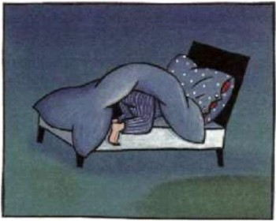

1. Leemos
Reseña sobre el diablo de los números
A Robert no le gustan las Matemáticas, como sucede a muchas personas, porque no las acaba de entender.

Pero una noche él sueña con un diablillo que pretende iniciarle en la ciencia de los números. Naturalmente, Robert piensa que es otra de sus frecuentes pesadillas, pero en realidad es el comienzo de un recorrido nuevo y apasionante a través del mundo de las Matemáticas.
¿No te resulta extraño hallar siempre secuencias numéricas por la simple multiplicación de los unos:
1 x 1 = 1
11 x 11=121
111 x 111 = 12321
(...)
111111 x 111111 = 12345654321
y así sucesivamente?
Éste es sólo uno de las curiosidades matemáticas que aparecen en el libro. Durante doce noches, Robert sueña sistemas numéricos cada vez más increíbles.
De pronto, los números cobran vida por sí mismos, una vida misteriosa que ni siquiera el diablo puede explicar del todo. Nunca las Matemáticas habían sido algo tan fascinante. Pronto, el diablo le hará abandonar los tópicos escolares y hará que acceda a niveles superiores: ¡y aun así los entiende!
Y el joven lector también. Los números, cada página que pasa, se van volviendo cada vez más absorbentes. Es como magia, y Robert quiere saber más y más hasta que, al fin, el diablo le hace comprender que algunos problemas y paradojas pertenecen a las altas esferas de la ciencia.
Sobre el autor

Hans Magnus Enzensberger recibió el Premio Príncipe de Asturias de Comunicación y Humanidades en el año 2002.
Es un conocido escritor alemán que ha brillado en diferentes géneros tales como poesía, ensayo...; uno de sus libros,
"El diablo de los números", trata sobre Matemáticas y, sorprendentemente, llegó a ser un éxito de ventas, mostrando
el interés de un amplio sector del público por esta disciplina científica.
Actividad de lectura
En esta ocasión trabajaremos con el capítulo 3 del libro, el cual está intímamente relacionado con el trabajo que hemos venido realizando en clase sobre divisibilidad y números primos.
Para acceder a dicho capítulo y comenzar la lectura pulsa en la imagen siguiente.
Capítulo 3: La tercera noche
El libro completo puedes verlo en el portal Libros Maravillosos.